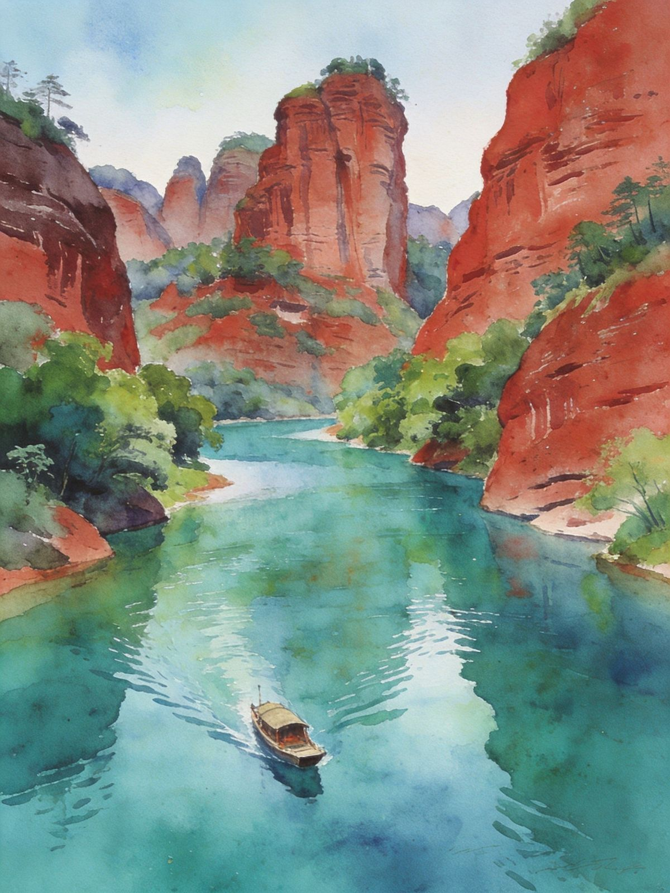
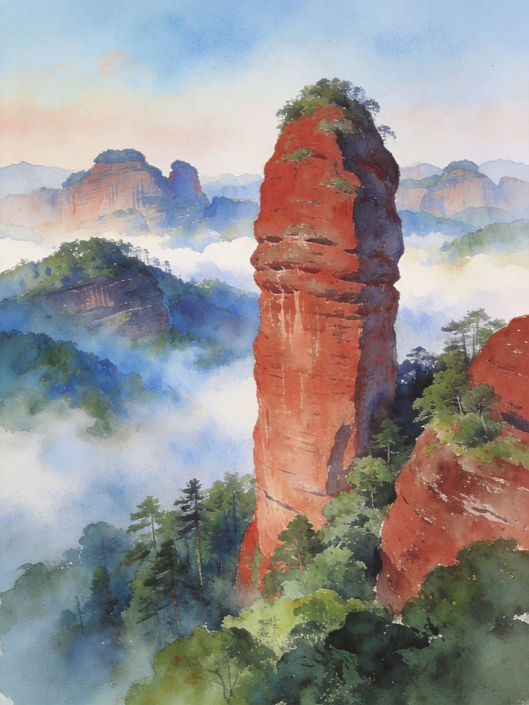

色如渥丹、灿若明霞的赤壁丹霞，绵延百里，是世界自然遗产、中国名字被"丹霞"二字命名的山。攀长老峰看群峰、乘锦江游船赏山水、探南华寺禅意。
5A · 世界自然遗产 中国丹霞命名地丹霞山地处广东韶关市仁化县，是我国"丹霞地貌"这一地学术语的**命名山**。古地质时期沉积的红色砂砾岩经亿万年风化，形成一座座壁立千仞、形如卧佛、阳元之奇的红岩峰丛，90 平方公里的核心区里，"丹山、碧水、绿树、蓝天"四色交织。
看什么：长老峰看群峰、阳元石看地标奇石、锦江游船看"水上丹霞"；山下还有南华寺（六祖惠能道场）、张九龄故里等人文点。
适合：登山徒步者、地质/摄影爱好者、想避市繁闹、看奇峰的休闲客；粤北自驾爱好者很爱。


阳元石所在，攀登后可看峰林与田园，视野开阔。
丹霞山内湖泊，乘船/步道环游，山色倒映水面。
山下禅宗祖庭，六祖慧能肉身道场，清净礼佛。
景长老峰爬山看群峰 → 翔龙湖环游 → 观日亭看日落晚霞
景阳元山看阳元石 → 锦江游船游"水上丹霞" → 返程
景抵达 → 长老峰爬山看群峰 → 翔龙湖 → 观日落
景阳元山看阳元石 → 锦江游船赏水上丹霞
景南华寺礼佛 → 韶关市区（风度古城/百年东街）→ 返程
高铁：到"丹霞山站"（高铁），出站有景区直达车/公交约 20 分钟达景区大门；或到韶关站后转车。
自驾：广州/珠三角出发约 3 小时，走乐广高速转韶赣高速，丹霞山下道口近。
飞机：可飞广州/深圳后再高铁前往，较为绕，一般不自驾优先考虑。
联票观光车：景区范围大，推荐购联票+乘景区观光车在各景点间换乘。
建议节奏：长老峰与阳元山分两日体验更从容；锦江游船约 1 小时，值得安排。
提示：登山费时费腿，穿防滑运动鞋；夏天做好防晒补水。
南雄板鸭、乐昌芋头、酸笋炒田螺，粤北风味偏辣叠加客家。
酿豆腐、盐焗鸡，韶关多客家人，地道客家味。
竹笋、蕨菜、腊味，山区食材新鲜。